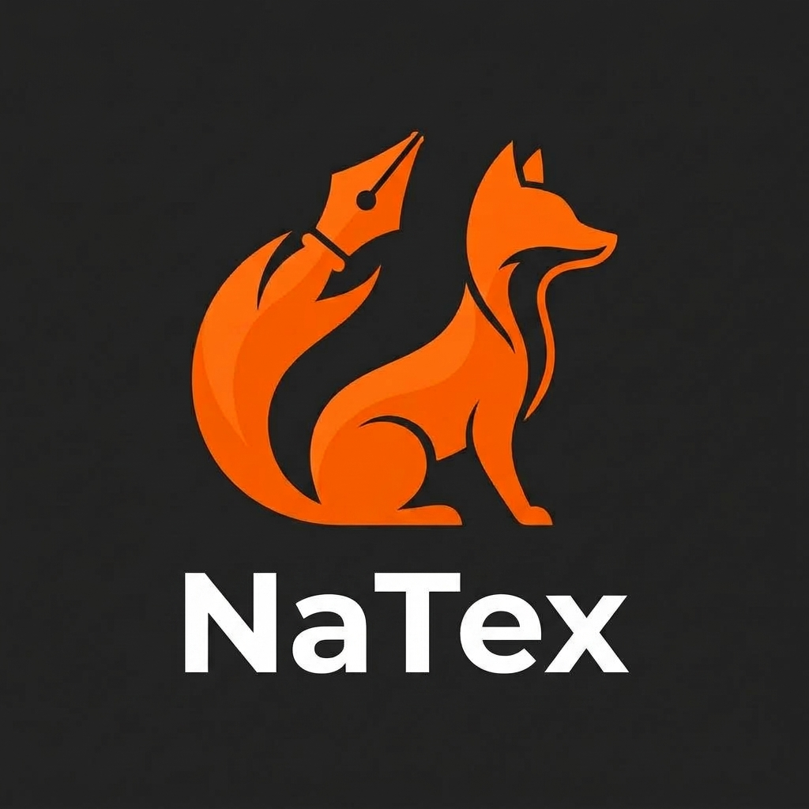
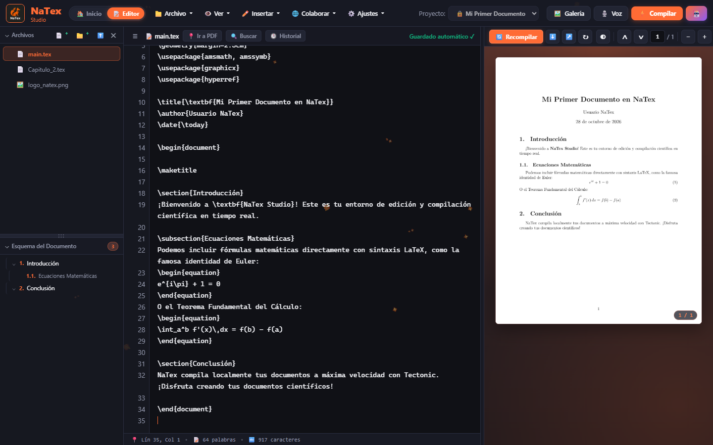

★ Proyecto Estrella
v1.3.1
GPLv3
🦊 NaTex Studio
Editor de texto LaTeX pensado en la comodidad, rapidez y experiencia visual
Herramienta de edición de documentos LaTeX pensada en la comodidad y en ahorrar tiempo, sin instalaciones pesadas ni configuraciones complicadas. Abres, escribes y ves tu PDF actualizado al instante, con un constructor visual de fórmulas, editor rápido de tablas, trabajo colaborativo en vivo, asistente con IA y más de 20 temas personalizables.
- ⚡ Abre, escribe y compila en segundos
- 🧮 Teclado visual para fórmulas sin memorizar comandos
- 🌐 Colaboración en tiempo real mediante enlace o QR
- 🤖 Asistente con IA y dictáfono inteligente de clases
Edición LaTeX Visual
Vista PDF Instantánea
Trabajo Colaborativo
Asistente IA
21 Temas
